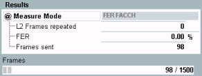
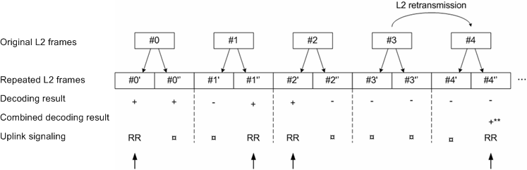

The R&S CMW provides FER FACCH tests for either non-repeated or repeated DL FACCH transmission.
The fast associated control channel (FACCH) is used to transmit urgent control messages. Each FACCH information block from layer-2 ("L2 Frame") contains 184 bits; on a full rate TCH, it replaces (steals) one speech frame. In "FER FACCH" mode, the R&S CMW sends L2 frames over the FACCH and counts the number of retransmission requests of the MS under test.

- L2 frames repeated: Number of FACCH frames that the MS under test failed to decode properly (= number of retransmission requests received from the MS)
- FER: Frame error rate, percentage of the repeated frames relative to the total number of frames sent:
<FER> = <L2 Frames Repeated> / <Frames Sent> - Frames sent: Number of L2 frames sent since the start of the (single shot) measurement.
According to GSM specifications, each FACCH block can be sent twice to improve the robustness of FACCH signaling. If the repeated FACCH functionality is enabled ("Connection > Circuit Switched > Repeated FACCH: On" in the "GSM Signaling Configuration" dialog), the MS only requests a retransmission if it cannot decode both frames. A retransmission request in repeated FACCH mode causes the retransmission (repetition) of both frames as shown below.

A "L2 Frames Repeated" event occurs if the MS does not send an RR message in a sequence of two identical FACCH blocks. In the example above, this event occurs for L2 frame #3; the measured FER is 1/5 = 20 %.
Reference sensitivity tests for full-rate and half-rate FACCHs and for full-rate repeated FACCHs are specified in 3GPP TS 51.010, clause 14.2.